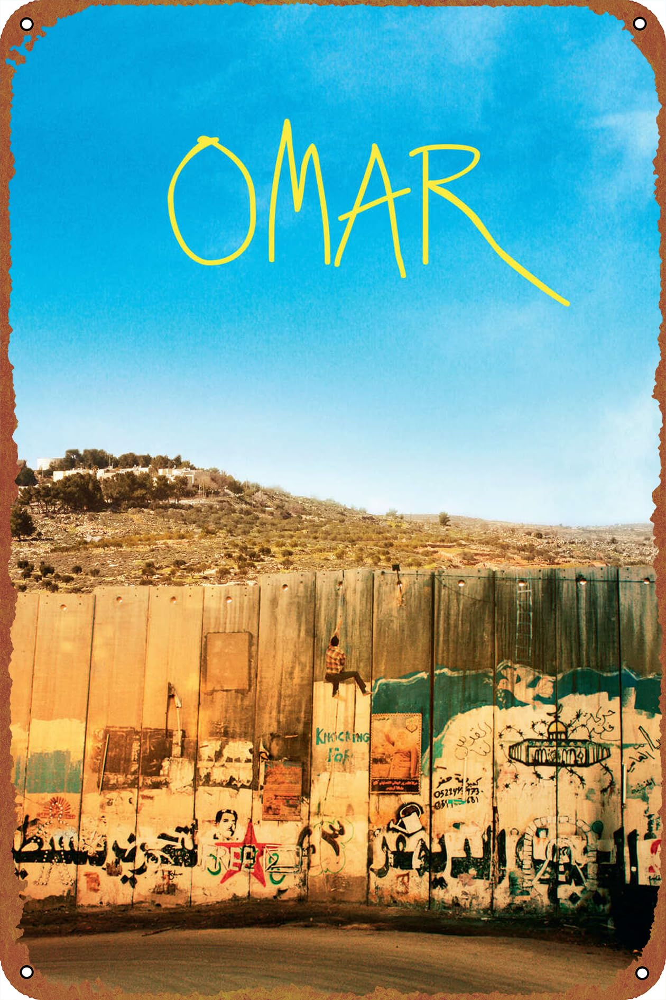

|  |
Plot:The story follows Omar (played by Adam Bakri), a young Palestinian baker who is caught between his desire for freedom and his personal relationships. Omar is part of a group of friends who are involved in resistance activities against the Israeli occupation. His life becomes increasingly complicated when he is coerced into becoming an informant for the Israeli security services after being captured and tortured. Omar’s relationships with his friends and his romantic interest, Nadia (played by Leem Lubany), become strained as he struggles with the difficult choices he faces. Themes:"Omar" explores themes of identity, betrayal, and the impact of political conflict on personal relationships. It delves into the moral and emotional dilemmas faced by individuals living under occupation and examines the consequences of choosing between personal loyalty and political resistance. Reception:"Omar" received critical acclaim for its powerful storytelling and strong performances. It was nominated for the Best Foreign Language Film at the 86th Academy Awards and won several awards at various international film festivals. The film was praised for its nuanced portrayal of the Palestinian experience and its compelling narrative. Impact: "Omar" contributed to the conversation about the Israeli-Palestinian conflict through the lens of personal stories and dilemmas. It has been recognized for its ability to humanize the political struggle and provide insight into the everyday realities faced by people living in conflict zones. |